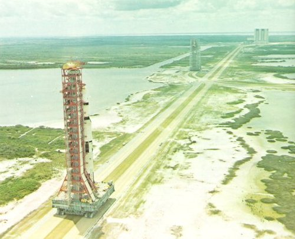
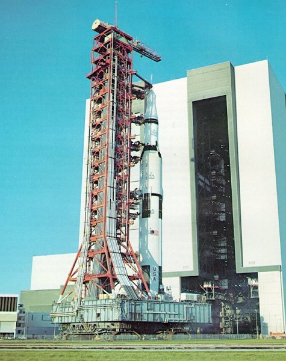
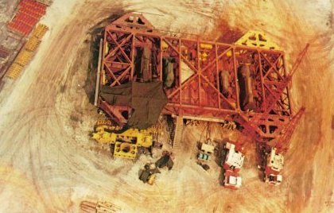
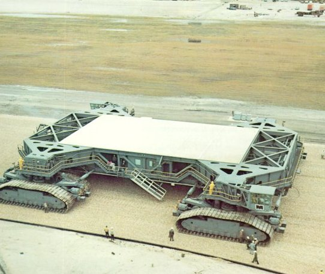
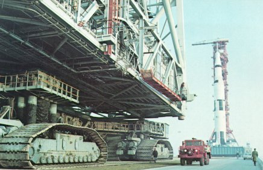
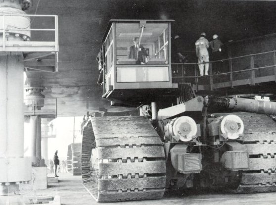
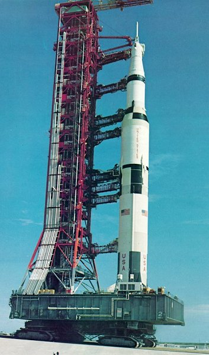
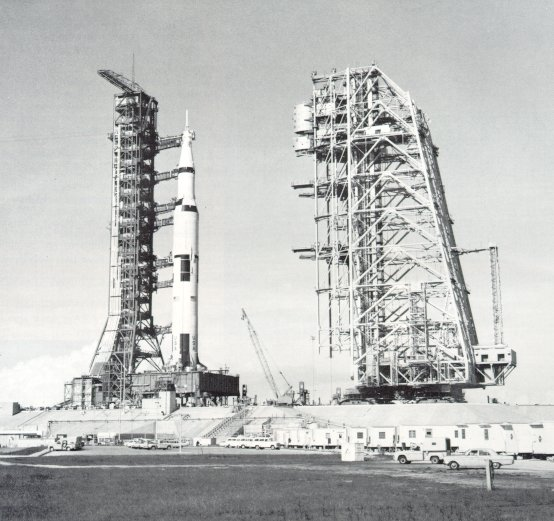

|  |
| The first Saturn V space vehicle and its Mobile Launcher on their way out to Launch Pad A atop a transporter. The pad is 3 1/2 miles east of the VAB. The Mobile Service Structure is parked at the loop where the crawlerway to Pad B diverges to the north (right). The barge canal to the VAB runs parallel to the main crawlerway. |
|  |
| The last Moonbound Apollo-Saturn rolls slowly out of the huge VAB into the morning Sun. Each door of the four VAB bays opens 456 feet high and 75 feet wide. The VAB encloses a volume of 129,482,000 cubic feet. But the tale that clouds form inside and rain falls is only folklore. |
|  |
| Mining technology for a Moon launch. Utilizing power shovel design concepts, two 131-foot long, 3000-ton, track-mounted crawlers were built to transport the MSS and an assembled Apollo-Saturn V from the VAB to the pad, and back should hurricane weather threaten a launch. |
|  |
| Shipped in sections from Marion, Ohio, the 114-foot wide, X-framed crawlers were assembled on site at the Cape. Four large diesel engines coupled to six electrical generators power crawler's motive, leveling, jacking, and steering systems. Operator's cab, lower right is matched diagonally by another. |
|  |
| The Mobile Service Structure coming down from the launch pad. About 11 hours before launch, a crawler carries the MSS back from the pad to its parking area. Although the crawler is descending a 5-degree slope, the hydraulic cylinders, shown here fully extended, keep its platform level. |
|  |
| A driver eases the crawler beneath a Mobile Launcher; once in place it lifts up both launcher and space vehicle. The driver, who wears a seat belt for his 1-mph trip, is like the helmsman of a ship; the total crawler crew, in control and engine rooms inside, is about 15 men. |
|  | Balancing its load on its head, a crawler ascends the grade to the launch pad. The unfueled space vehicle and its Mobile Launcher together weigh 6000 tons, and the crawler weighs another 3000 tons. Two tracks at each corner drive the crawler. The individual cleats of the tracks weigh a ton apiece. |
|  |
| Dress rehearsal. During a Countdown Demonstration Test, as for an actual Apollo launch, the Mobile Service Structure was removed from the pad at about T-minus-11 hours, leaving the fueled space vehicle in place. The MSS owes its awkward shape to the many platforms built out over the base of the Mobile Launcher to service the rocket. The designers then balanced the MSS by placing the elevators and their machinery at the other side of the structure. |